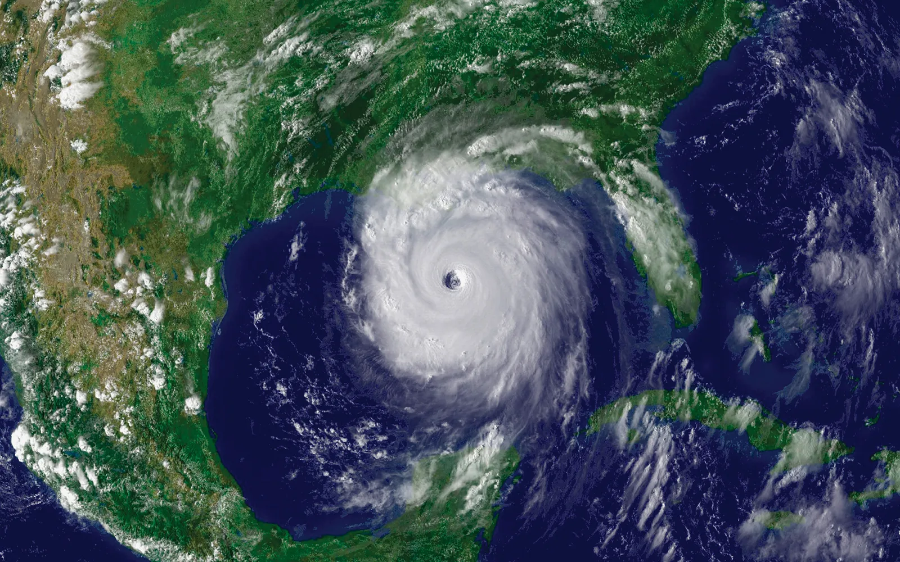

Wikipedia
Free Encyclopedia
lovefish
Free Encyclopedia
lovefish
Hurricane Otis was a compact yet devastating tropical cyclone which made landfall in October 2023 near Acapulco as a Category 5 hurricane. Otis was the first Pacific hurricane to make landfall at Category 5 intensity and surpassed Hurricane Patricia as the strongest landfalling Pacific hurricane on record. The fifteenth tropical storm, tenth hurricane, eighth major hurricane,[nb 2] and second Category 5 hurricane of the 2023 Pacific hurricane season, Otis originated from a disturbance several hundred miles south of the Gulf of Tehuantepec. Initially forecast to only be a weak tropical storm at peak intensity, Otis instead underwent explosive intensification to reach peak winds of 165 mph (270 km/h) and made landfall at peak intensity. Once inland, the hurricane rapidly weakened before dissipating the following day. Making landfall just west of Acapulco, Otis's powerful winds severely damaged many of the buildings in the city. Landslides occurred, and flooding resulted from heavy rain. Communication was heavily cut off, initially leaving information about the hurricane's impact largely unknown. Many radio stations were also damaged. In the aftermath, the city had no drinking water and many residents also lost power. The government of Guerrero mobilized thousands of military members to aid survivors and assist in recovery efforts. The hurricane caused at least 43 deaths and left at least 10 missing.
The U.S. National Hurricane Center (NHC) first noted on October 15 that an area of low pressure was expected to form south of Guatemala and El Salvador by the middle of the week.[2] A broad low-pressure area formed several hundred miles south of the Gulf of Tehuantepec on October 18 and was generating disorganized thunderstorms.[3] The system increased in organization over the next few days, becoming a tropical depression at 15:00 UTC on October 22. At that time, the depression had strong, increasing convective activity near its well-defined center.[4] Six hours later, the depression became a tropical storm and received the name Otis following a slight increase in organization. The nascent storm was moving slowly northward as it was located within a light steering flow between a low-pressure trough to its northwest and a high-pressure ridge to its northeast.[5] Overnight, deep convection pulsed on the northwestern portion of the circulation with the center becoming more embedded in the colder cloud tops.[6] However, this convective trend plateaued in the early hours of October 23 due to easterly wind shear, which hindered further organization and left the center partially exposed.[7] By 03:00 UTC on October 24, microwave satellite imagery depicted a low-level ring structure, despite the overall sheared appearance of the system. The NHC noted the imagery as a possible precursor to a rapid intensification event.[8]